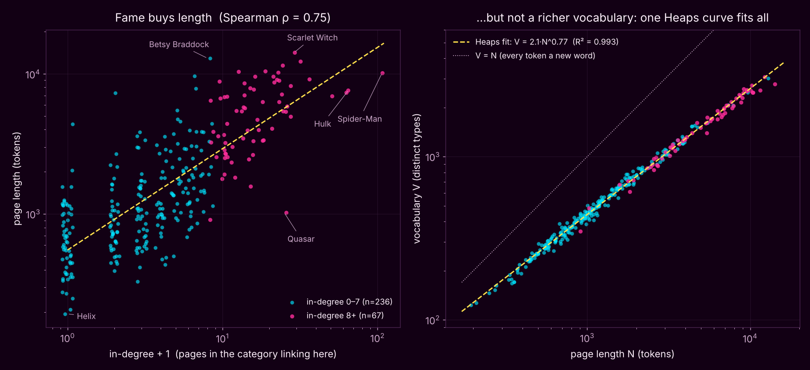

What we asked
Marvel is back. For four weeks we only looked at who links to whom; this week the course handed us the full text of all 303 pages, so we could finally ask the question that joins the two halves of the course: does being famous in the network make your Wikipedia page longer, and does it make its language any richer? "Famous" here means in-degree in the week 1 hyperlink network, i.e. how many of the other 302 character pages link to you. Spider-Man has 106; 58 characters have none.
How we counted
One preprocessing recipe, stated up front because every number below
depends on it: lowercase the text, then take runs of letters and digits
as tokens, keeping internal hyphens and apostrophes together (so
spider-man and didn't are one token each). No
stopword removal, no lemmatization. A page's length is its
number of tokens and its vocabulary is its number of distinct
types. Under that recipe the whole corpus is 725,307 tokens and
30,779 types, of which 12,284 are hapaxes; the median page has
1,234 tokens, the shortest (Helix) 194 and the longest (Scarlet Witch)
14,157.
Finding 1 — fame buys length
In-degree and page length rise together, strongly: Spearman ρ = 0.75 (bootstrap 95% interval 0.69–0.80). On log axes the slope is about 0.72, so ten times the incoming links goes with roughly five times the text. The medians make it concrete: characters nobody links to have a median page of 631 tokens, and the 20 characters with more than 20 incoming links have a median of 7,484.

Finding 2 — but not a richer vocabulary
Do famous pages also use a richer vocabulary? The obvious measure, the type–token ratio (types divided by tokens), says the opposite: it falls with fame at ρ = −0.73, from a median of 0.50 for the unlinked characters to 0.28 for the most linked. That would make a great headline ("Wikipedia writes about its stars in simpler language") and it would be wrong. The ratio drops for any long text, because the common words get used up early and new types arrive ever more slowly. That is Heaps' law.
So we fitted Heaps' law across pages instead: V = K·Nβ, with V the vocabulary and N the length. One curve, V ≈ 2.1·N0.77, explains 99.3% of the variance in log vocabulary across all 303 pages. Then we asked whether famous pages sit above or below that curve. They do neither: the correlation between in-degree and a page's distance from the curve is ρ = −0.03 (interval −0.14 to 0.08). A second check that does not rely on the fit agrees: cut every page of at least 500 tokens down to its first 500 and the vocabulary of that slice is unrelated to fame (ρ = 0.02, 272 pages).
| In-degree | Pages | Median tokens | Median types | Type–token ratio | Distance from Heaps curve |
|---|---|---|---|---|---|
| 0 | 58 | 631 | 327 | 0.50 | −0.002 |
| 1–2 | 84 | 880 | 407 | 0.45 | +0.004 |
| 3–7 | 94 | 1,501 | 636 | 0.41 | +0.006 |
| 8–20 | 47 | 3,852 | 1,262 | 0.32 | −0.002 |
| 21+ | 20 | 7,484 | 2,119 | 0.28 | +0.002 |
The last column is the median residual in log10 units. The ratio column falls by almost half from top to bottom; the residual column does not move.
Checking it in the raw text
The biggest outlier on the left panel is Quasar: 24 incoming links, which puts it in the top 20, but only 1,023 tokens. We opened the file. It starts "Quasar is the name of several superheroes appearing in American comic books…", so it is a short overview of everyone who has worn the Quantum Bands, and the links come from the cosmic corner of the network (Adam Warlock, Nova, Moondragon, Phyla-Vell, Rocket Raccoon). It is a well-connected name, not a well-developed page. In the other direction, Betsy Braddock has 12,885 tokens on only 7 incoming links. And as a sanity check on the tokenizer, Helix's 194 tokens match a plain whitespace split of the file exactly.
What we cannot claim
Direction. This is a correlation in one frozen snapshot. Long pages also link out more (out-degree against length is ρ = 0.77), and in- and out-degree are themselves correlated (ρ = 0.70). Holding out-degree fixed, the in-degree relationship shrinks to a partial rank correlation of 0.46: still clearly there, but a good part of "fame buys length" is simply that big pages are big in every direction. Fame. In-degree only counts links from the other 302 pages in this one category, not Wikipedia as a whole. Richness. Types per token is a crude measure. It says nothing about which words are used, and at very short lengths it is not perfectly flat: on the first 194 tokens (the length of the shortest page) famous pages are slightly more varied (ρ = 0.21), probably because obscure pages open with the same boilerplate sentence. Preprocessing. Removing stopwords or keeping case moves the Heaps exponent (0.84 and 0.78) but neither changes the conclusion.
What surprised us
How well Heaps' law works. We expected a cloud; we got a line. A 300-word page about a forgotten 1990s clone and the 10,000-word Spider-Man article spend their vocabulary at the same rate, so Wikipedia's editors write about stars and nobodies in the same register and simply keep going for longer. The other lesson is the one the course keeps repeating about LLM-written reports: the type–token ratio handed us a strong, significant and completely misleading correlation, and it took a baseline to see through it.